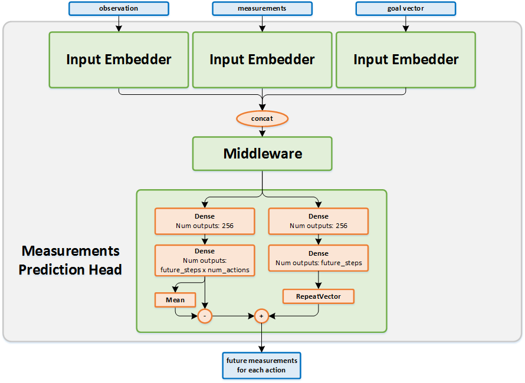

Direct Future Prediction
Actions space: Discrete
References: Learning to Act by Predicting the Future
Network Structure

Algorithm Description
Choosing an action
- The current states (observations and measurements) and the corresponding goal vector are passed as an input to the network. The output of the network is the predicted future measurements for time-steps and for each possible action.
- For each action, the measurements of each predicted time-step are multiplied by the goal vector, and the result is a single vector of future values for each action.
- Then, a weighted sum of the future values of each action is calculated, and the result is a single value for each action.
- The action values are passed to the exploration policy to decide on the action to use.
Training the network
Given a batch of transitions, run them through the network to get the current predictions of the future measurements per action, and set them as the initial targets for training the network. For each transition in the batch, the target of the network for the action that was taken, is the actual measurements that were seen in time-steps and . For the actions that were not taken, the targets are the current values.